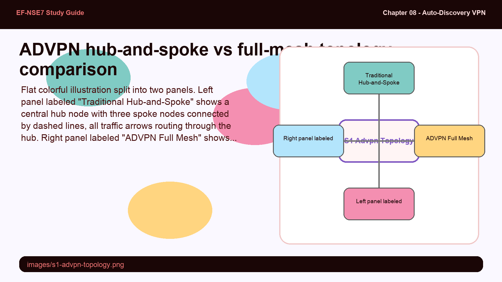
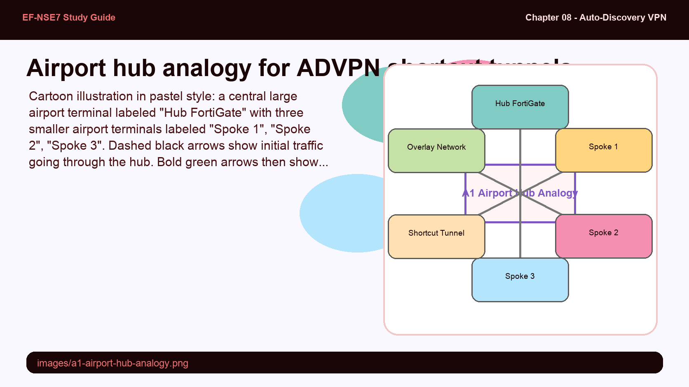
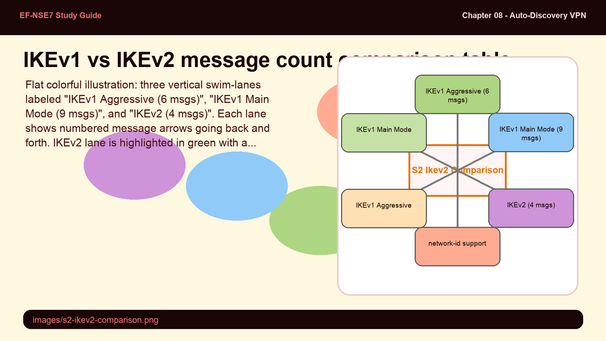
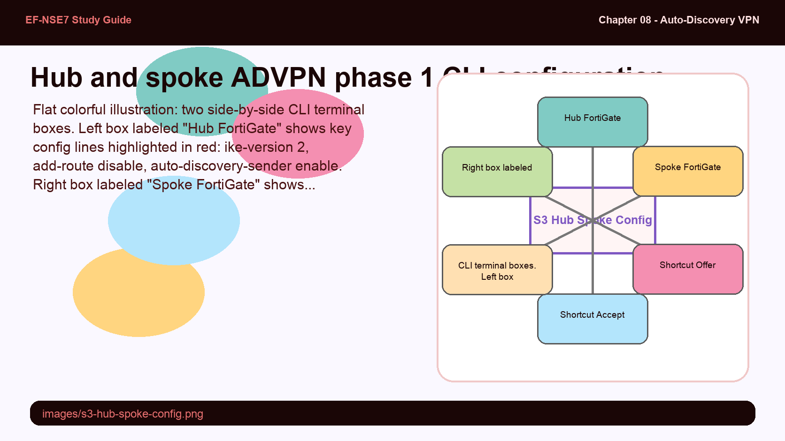
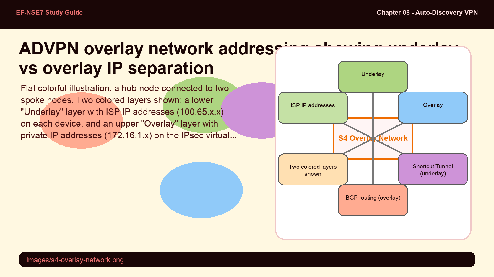
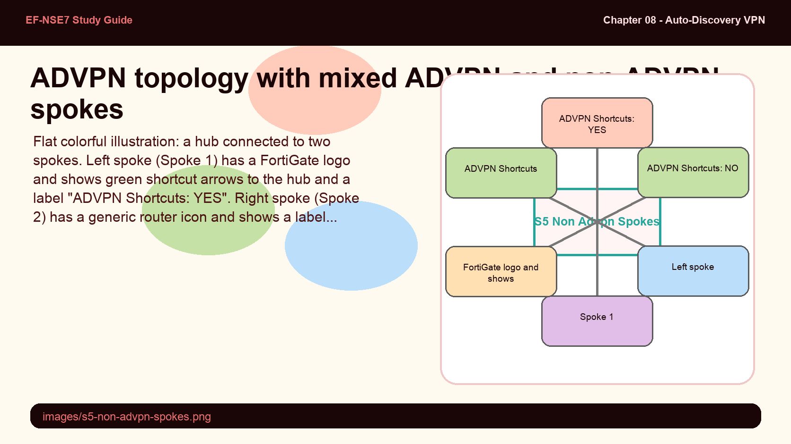

Traditional hub-and-spoke VPN routes all inter-branch traffic through a central hub — even when two spokes are geographically close. ADVPN promises to eliminate that detour, but it requires the hub to remain involved in tunnel setup even though it steps out of the data path afterward. Think about what that means for initial traffic flow.
- In a standard hub-and-spoke VPN, what are the two main downsides when branch-to-branch traffic always traverses the hub, and how does ADVPN solve each one?
- ADVPN supports both single-hub and multiple-hub architectures. What additional complexity does a multi-hub design introduce that a single-hub design avoids?
ADVPN — Efficient Full-Mesh Meets Simple Hub-and-Spoke

Left: traditional hub-and-spoke where all traffic traverses the hub. Right: ADVPN full-mesh with on-demand spoke-to-spoke shortcuts.
In traditional hub-and-spoke VPN topologies, all branch-to-branch traffic routes through the central hub firewall, introducing latency and creating a throughput bottleneck. Creating manual full-mesh IPsec tunnels between every branch is possible but becomes operationally expensive — every new spoke requires O(n) new tunnel configurations.
ADVPN (Auto-Discovery VPN) is Fortinet's proprietary solution that combines the operational simplicity of hub-and-spoke with the performance of full-mesh. Spoke-to-spoke IPsec tunnels are dynamically created on demand: the first packet travels via the hub, the hub signals both spokes to negotiate a direct shortcut tunnel, and subsequent traffic takes the shortcut — all without manual intervention.
ADVPN supports single or multiple-hub architectures, NAT traversal for on-demand tunnels, both IPv4 and IPv6, and dynamic routing protocols including BGP, OSPF, RIPv2, and RIPng.
ADVPN works like an airport hub that arranges direct charter flights between passengers who meet there.
- Hub airport — the ADVPN hub FortiGate that handles the initial connection and shortcut negotiation
- Spoke airports — branch FortiGates; passengers (traffic) first fly to the hub, then get redirected on a direct flight
- Shortcut tunnel — the new direct charter flight between two spoke airports, bypassing the hub for future journeys
- Overlay network — the airline reservation system shared by all airports, used to coordinate routes

ADVPN can technically run on IKEv1 but Fortinet strongly recommends IKEv2. The difference isn't just fewer messages — IKEv2 introduces a Fortinet-proprietary field called the network-id that solves a specific ADVPN problem that IKEv1 cannot address at all.
- IKEv2 uses only 4 total messages (2 exchanges) vs 6 for IKEv1 aggressive mode and 9 for IKEv1 main mode. Why does message count matter specifically in an ADVPN environment where tunnels are created on demand?
- What is the network-id in IKEv2 ADVPN, and what specific multi-hub scenario problem does it solve that IKEv1 cannot?
Advantages of IKEv2 in ADVPN

IKEv2 uses only 4 total messages vs 6 (IKEv1 aggressive) or 9 (IKEv1 main mode), plus adds network-id support for multi-hub ADVPN.
For ADVPN, IKEv2 is the preferred IKE version because it establishes security associations in just 4 messages across two exchanges (IKE_SA_INIT and IKE_AUTH), compared to IKEv1's 6 messages (aggressive) or 9 messages (main mode). In an ADVPN environment where shortcut tunnels are created on demand, this reduced negotiation overhead directly improves spoke-to-spoke connection setup time.
| Feature | IKEv1 Aggressive | IKEv1 Main Mode | IKEv2 |
|---|---|---|---|
| Total Messages | 6 | 9 | 4 |
| Peer IDs | Clear text (exposed) | Encrypted | Encrypted |
| Network ID | N/A | N/A | Yes |
| Security Proposals | AES, SHA1, DH14 | AES, SHA1, DH14 | AES-GCM, SHA-256, ECDH |
| Purpose | Fast but IDs exposed | Secure, slow | Faster, safer |
The network-id is a Fortinet-proprietary IKEv2 attribute. When multiple IKEv2 tunnels exist between the same local/remote gateway pair (common in multi-hub ADVPN deployments), the network-id lets IPsec peers select the correct phase 1. Without it, FortiGate cannot distinguish which hub a shortcut message belongs to when two hubs share the same underlay gateway.
ADVPN configuration has three distinct roles that must be applied to the correct phase 1 interface on each device. Getting the sender vs. receiver direction wrong is the most common configuration mistake. The auto-discovery-forwarder role only appears in multi-hub designs.
- The hub is configured with auto-discovery-sender and the spoke is configured with auto-discovery-receiver. Why does the hub "send" and the spoke "receive" — what is actually being sent and received?
- Why must add-route be disabled on the hub and net-device also disabled? What breaks if either is left enabled?
Hub & Spoke IPsec Configuration

Hub phase 1: set type dynamic, ike-version 2, add-route disable, net-device disable, auto-discovery-sender enable. Spoke phase 1: ike-version 2, auto-discovery-receiver enable, net-device enable.
ADVPN phase 1 configuration uses three distinct role settings that must be applied on the correct device and tunnel interface:
- auto-discovery-sender enable — configured on the hub's spoke-facing phase 1 interface. When IPsec traffic transits the hub, it sends a shortcut offer to the originating spoke.
- auto-discovery-receiver enable — configured on the spoke's hub-facing phase 1 interface. Enables the spoke to receive shortcut offers and initiate direct tunnel negotiation.
- auto-discovery-forwarder enable — configured on inter-hub tunnels in multi-hub deployments. Forwards shortcut messages across overlay network boundaries.
config vpn ipsec phase1-interface
edit "VPN1"
set type dynamic
set interface "port1"
set ike-version 2
set net-device disable
set add-route disable
set auto-discovery-sender enable
next
endconfig vpn ipsec phase1-interface
edit "Hub1-VPN1"
set ike-version 2
set auto-discovery-receiver enable
set net-device enable
next
end
config vpn ipsec phase2-interface
edit "Hub1-VPN1"
set phasename "Hub1-VPN1"
set proposal aes256-sha256
next
endFor phase 2 on the hub, quick modes must be set to all (0.0.0.0/0.0.0.0) so the hub can accept any spoke subnet. Firewall policies must permit traffic from spokes to hub, hub to spokes, and between spokes (transiting through the hub before shortcut establishment).
ADVPN has two distinct network layers that serve completely different purposes. IPsec tunnels are built over underlay IP addresses (real internet IPs), but dynamic routing protocols run over overlay IP addresses assigned to the IPsec virtual interfaces. Confusing these two layers is a common ADVPN troubleshooting trap.
- Why can't the dynamic routing protocol run on the underlay (real internet) IP addresses? What specifically breaks if you try to peer BGP over underlay IPs in an ADVPN topology?
- In the example topology, Spoke 1's next-hop to reach Spoke 2's subnet is the overlay IP 172.16.1.3 (Spoke 2's IPsec interface), not Spoke 2's underlay IP 100.65.3.113. Why?
Overlay Network & IPsec Interface Addressing

IPsec tunnels use underlay (internet) IPs; BGP routing peers use overlay IPs on the virtual IPsec interfaces (172.16.1.0/24). The next-hop after shortcut is the spoke's overlay IP.
ADVPN relies on two distinct network layers that serve different purposes. IPsec tunnels are established over underlay IP addresses — the real internet or WAN addresses assigned to physical interfaces (e.g., 100.65.0.101/24 on the hub). Dynamic routing protocols (BGP, OSPF) run over the overlay network, which is a private address space assigned to the IPsec virtual interfaces.
Each hub and spoke receives an IP address on the shared overlay network (e.g., 172.16.1.0/24). The hub is assigned a broadcast address (172.16.1.1 with remote-ip 172.16.1.254/24) while each spoke gets a unique /32 address in the same range. This allows all devices to participate in the routing protocol and dynamically share their local network information.
config system interface
edit "VPN1"
set ip 172.16.1.1 255.255.255.255
set remote-ip 172.16.1.254/24
next
endconfig system interface
edit "Hub1-VPN1"
set ip 172.16.1.2 255.255.255.255
set remote-ip 172.16.1.1/24
next
endAfter the shortcut tunnel is established between Spoke 1 and Spoke 2, the routing table shows the next-hop as the overlay IP of Spoke 2 (e.g., 172.16.1.3), even though the actual IPsec tunnel is built over underlay IP 100.65.3.113. Phase 1 interface, phase 2 interface, and IPsec virtual interface are three distinct concepts — each phase 1 interface has exactly one IP address from the overlay network.
Real-world networks often have a mix of FortiGate and third-party VPN gateways. ADVPN shortcuts are Fortinet-proprietary, so third-party spokes will never receive or send shortcut messages. But they can still join the overlay routing table — the question is how the hub learns their subnets and distributes return routes.
- A non-ADVPN spoke needs to participate in overlay routing so the hub can forward traffic to it. What two phase 2 configuration elements allow this without enabling ADVPN shortcuts?
- Why does the additional phase 2 entry for the overlay advertisement need to be named alphabetically before the main phase 2 entry? What breaks if it comes second?
Non-ADVPN Spokes & Mixed Vendor Integration

Use Case 4: Spoke 1 (FortiGate, ADVPN-capable) gets shortcuts. Spoke 2 (third-party) uses Overlay_advertisement phase 2 with add-route enable + dst-subnet for overlay participation without shortcuts.
ADVPN is a Fortinet-proprietary protocol. When a spoke is a third-party IPsec gateway, it cannot participate in shortcut negotiation — it will never send or receive ADVPN offer/query/reply messages. However, a third-party spoke can still participate in the ADVPN hub-and-spoke architecture for routing purposes.
For a non-ADVPN spoke to share its subnets via dynamic routing, it must announce its networks using an IP address from the overlay network segment. The hub phase 2 for these spokes requires a special configuration with two entries:
config vpn ipsec phase2-interface
edit "Overlay_advertisement"
set phasename "Spoke"
set proposal aes256-sha256
set add-route enable
set dst-subnet 172.16.1.0 255.255.255.0
next
edit "Spoke"
set phasename "Spoke"
set proposal aes256-sha256
next
endThe Overlay_advertisement phase 2 entry must be named so it alphabetically precedes the regular phase 2 entry (Spoke). Phase 2 lookup occurs in alphabetical order — the specific overlay advertisement must match first, before the catch-all 0.0.0.0/0 phase 2. The diag vpn ike config list command shows the phase 2 entries in lookup order to verify correct naming.